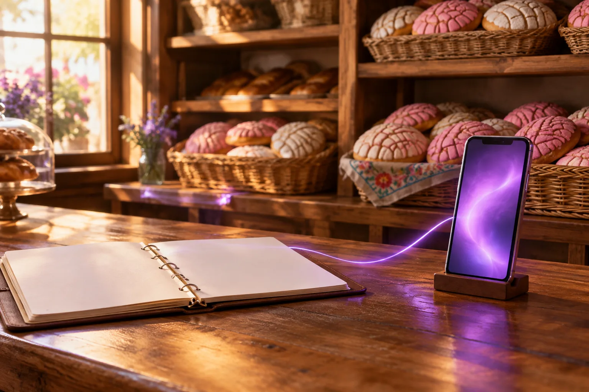

Un asistente que contesta con lo que sabe tu negocio
Tus clientes preguntan lo mismo todos los días. Así funciona un asistente que contesta con tus documentos y no inventa lo que no sabe.

Son las nueve de la noche y tu WhatsApp sigue sonando. ¿A qué hora abren el sábado? ¿Hacen entregas? ¿Puedo pedir 40 conchas para el viernes? Son las mismas preguntas de ayer y serán las mismas de mañana.
Cada respuesta toma un minuto. El problema es que son decenas al día, llegan mientras atiendes el mostrador y casi siempre las contesta la misma persona. Contestar lo mismo se come el día, y la pregunta que no se contesta a tiempo muchas veces es una venta que se va.
Por qué un chat de IA cualquiera adivina
La primera idea suele ser conectar un chat de inteligencia artificial y dejar que conteste. Pero un modelo de IA, por sí solo, sabe mucho del mundo y nada de tu negocio. No conoce tu horario, tu menú ni tus reglas de pedidos.
Y cuando no sabe algo, no siempre lo dice: muchas veces adivina con una respuesta que suena segura. Si le preguntan a qué hora abres el sábado, puede contestar «a las 7:00» porque es una hora común para una panadería. Suena bien y está mal: tu panadería abre a las 8:00.
Qué es un RAG, sin tecnicismos
RAG es el nombre técnico de una forma de armar asistentes: antes de contestar, el asistente busca en tus documentos y responde solo con lo que encontró ahí. Tus documentos son lo que hoy contestas a mano: el menú, los horarios y tus reglas de pedidos y entregas.
Piénsalo como un examen a libro abierto. El asistente no contesta de memoria: abre tu libro, busca la página correcta y responde con lo que dice. Si la respuesta no está en el libro, está hecho para no inventarla.
Eso cambia dos cosas. Contesta con tus datos, no con los de otra panadería. Y cuando algo cambia, como el horario de diciembre, basta con actualizar el documento. Así funciona por dentro un agente de atención bien armado.
Un pedido de 40 conchas para el viernes
Volvamos a la panadería. Un cliente escribe el martes en la noche: «¿Puedo pedir 40 conchas para el viernes?».
El asistente no responde de memoria. Primero busca en tus reglas de pedidos y encuentra algo así:
Datos de ejemplo.
Con eso contesta: sí se puede, las 40 conchas quedan listas el viernes a partir de las 9:00 y el pedido se aparta con un anticipo. Todo sale de tus reglas, no de una suposición.
Luego el cliente pregunta: «¿Me las pueden hacer sin azúcar?». Eso no está en tus documentos, y aquí está la diferencia importante: el asistente no inventa. Le avisa al cliente que esa respuesta se la da alguien del equipo y te pasa la conversación completa. Tú entras solo cuando hace falta y ya sabes de qué se trata.
Lo probé conmigo primero
Antes de recomendarle esto a un cliente, lo construí para mí. Hice un clon digital: un asistente que contesta con mi trayectoria las preguntas de reclutadores.
Lo puse en vivo en dos días. Busca entre 209 pedazos de texto de mi perfil, mis casos, mi CV y una entrevista. Antes de publicarlo pasó un examen de 42 preguntas con sus respuestas esperadas, incluidas preguntas trampa e intentos de manipularlo para que dijera lo que no debe. Hoy el examen tiene 62.
Y aun así se equivocó: al principio inventó mis pasatiempos. La causa fue sencilla. Un fragmento traía la pregunta «¿qué haces fuera del trabajo?», pero la respuesta había quedado en otro. El asistente vio la pregunta sin respuesta y la llenó con algo que sonaba creíble. Lo corregí partiendo la información por pregunta, para que cada respuesta vaya junto a su pregunta, y sumé ese caso al examen.
La lección sirve para cualquier negocio: un asistente es tan bueno como el orden de tus documentos, y los errores se encuentran probando, no suponiendo.
Qué necesita tu negocio para tener uno
- Tus documentos. Lo que ya contestas a mano todos los días: menú, horarios, cómo se hace un pedido, entregas y formas de pago. No tienen que verse bonitos, pero sí estar completos y al día.
- Reglas de lo que no contesta. Qué temas deja para una persona, como quejas, pedidos especiales o descuentos, y en qué momento pasa la conversación a tu equipo.
- Un examen antes de publicarlo. Una lista de preguntas reales de tus clientes, con la respuesta que tú darías. Si el asistente no las contesta bien, todavía no sale.
Después de publicarlo, el trabajo sigue: lee conversaciones reales cada semana y actualiza tus documentos cuando algo cambie. En otra nota explico cómo saber si un agente está funcionando.
Lo más valioso no es la tecnología: es que tus respuestas dejan de vivir en la cabeza de una sola persona. Si quieres saber si a tu negocio le conviene uno y qué documentos te harían falta, eso lo podemos ver juntos.
¿Lo vemos para tu negocio?
Cuéntame qué se está atorando en tu operación y te digo por dónde empezaría.
Cuéntame de tu negocio